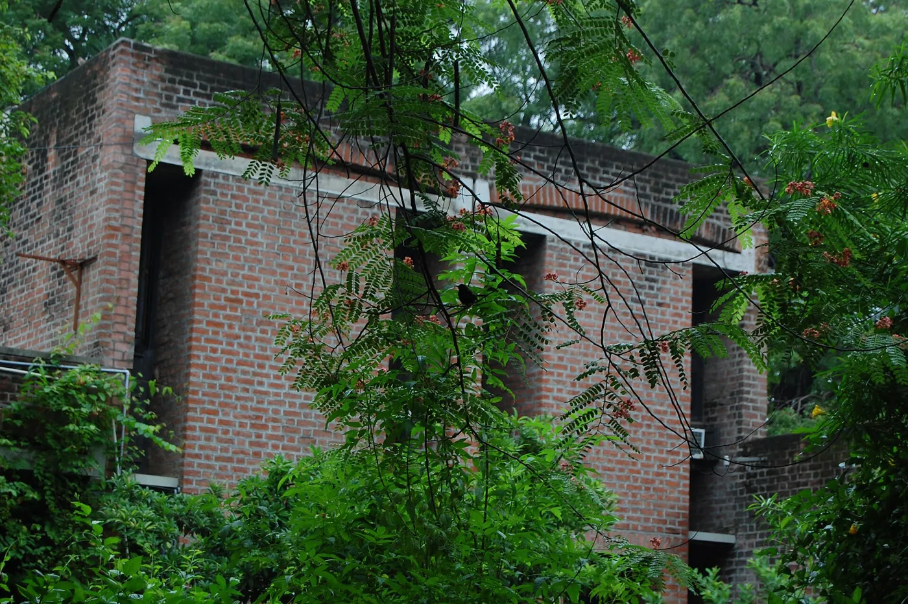
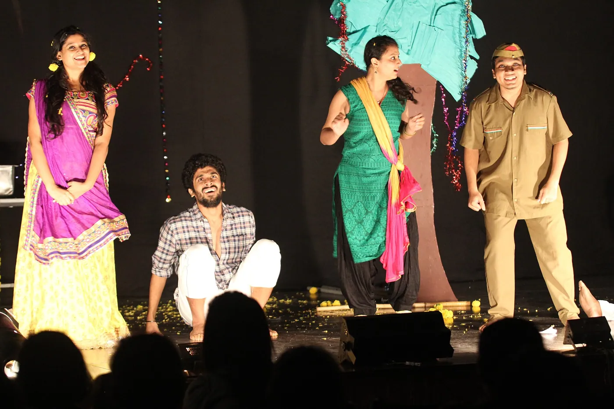
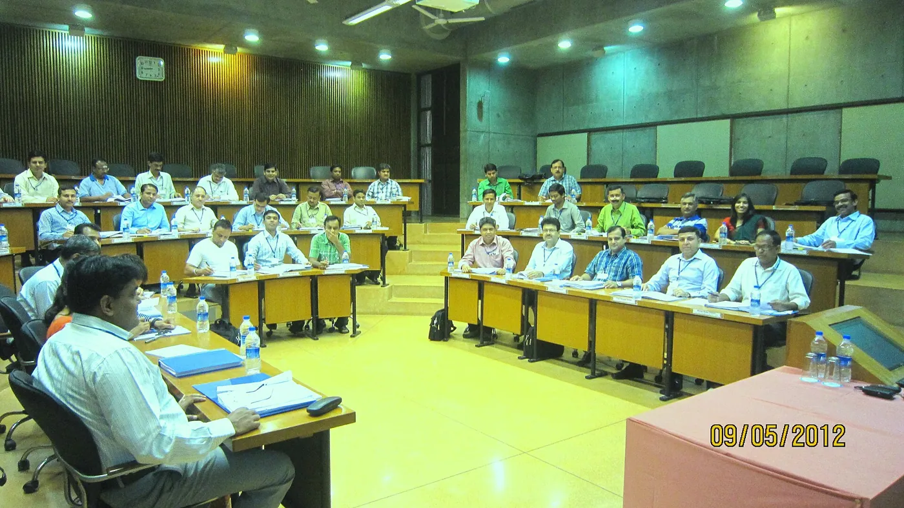
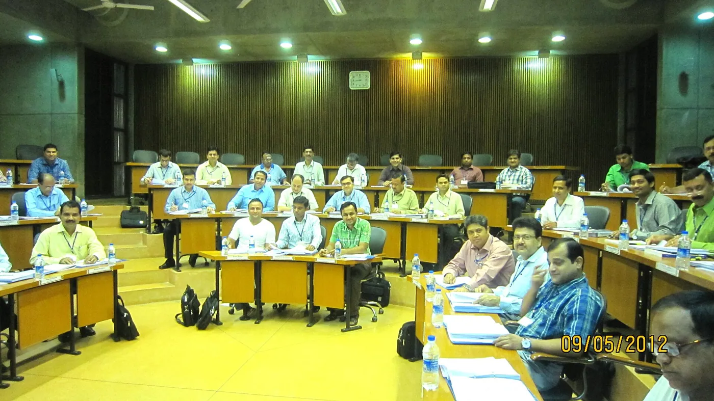

1/5 · Exterior · Fauna on campusPhoto: Students of IIMA · CC BY 3.0 · source
2/5 · Exterior · Fauna on campusPhoto: Students of IIMA · CC BY 3.0 · source3/5 · ExteriorPhoto: Students of IIMA · CC BY 3.0 · source
4/5 · Interior · Corridor in old campus classroom blockPhoto: Students of IIMA · CC BY 3.0 · source
5/5 · Interior · Spacious and beautiful class room with modern facilitiesPhoto: Kalyan Shah · CC BY-SA 3.0 · source030/100 · Education · Late modernism
IIM Ahmedabad
Louis Kahn · Ahmedabad, India · 1974
Study it forBrick arches tied with concrete, and deep shaded spaces against the Gujarat heat.
- Architect
- Louis Kahn
- Place
- Ahmedabad, India
- Year
- 1974
- Typology
- Education
- Movement
- Late modernism
- Region
- South Asia
See it on the wall